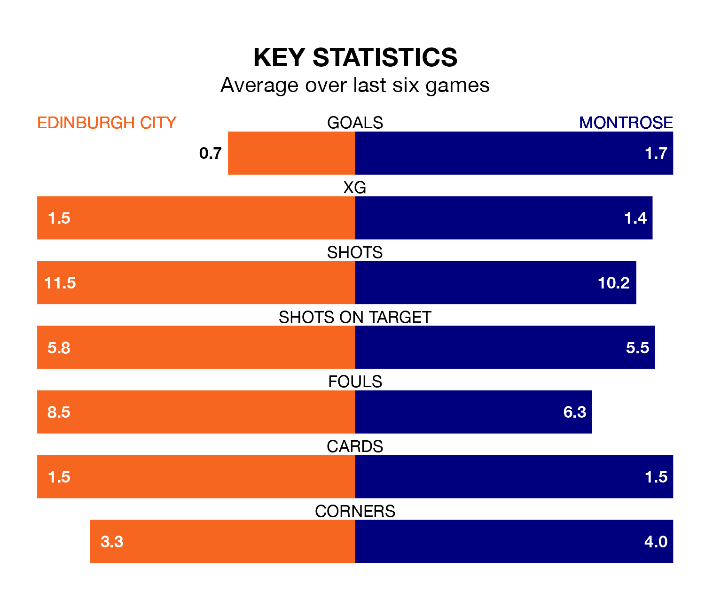

Relegation candidates Edinburgh City face a challenge against high-flying Montrose at the Meadowbank Stadium on Tuesday.
Edinburgh City are rooted to the bottom of the League One table, and have picked up just two wins and five draws in their 32 games to date.
The Gable Endies, meanwhile, are fourth in the standings with 47 points, having won 13 and drawn eight, and are 40 points behind table-toppers Falkirk.
Edinburgh are in awful form in League One, with no wins and six losses from their last six games.
With two wins and two draws over that period, Montrose's form is much better – they have taken eight points from 18, compared to City's zero.
In the last 10 years, Edinburgh and Montrose have played each other on 16 occasions. Edinburgh won two of them, Montrose 10, and they drew four times.
On average, Edinburgh scored 0.9 goals and the Gable Endies 2.3 in those matches.
Their last meeting was on February 10, when Montrose won 3-0 at home.
With 34 goals in 32 games so far this season, the home side are the league's lowest scorers with 1.1 goals per game. And they are conceding more than average, letting in 90 goals at a rate of 2.8 per game.
The Gable Endies, meanwhile, are average scorers, with 1.6 goals per game. They have also conceded 1.6 goals per game.
In Cameron Gill, the visitors can rely on one of the league's safest pair of hands. He has kept six clean sheets in his 32 appearances this season in League One.
In Edinburgh's net, Andrew McNeil has one clean sheet in nine games. He has conceded a goal every 34 minutes, 70% more often than the 59 minutes between goals for Gill.
Edinburgh's last match was on Saturday, a 2-0 loss against Queen of the South.
Montrose drew 0-0 with Alloa Athletic last time out, also on Saturday.
Updated: 11:31 (UTC), 15/04/24